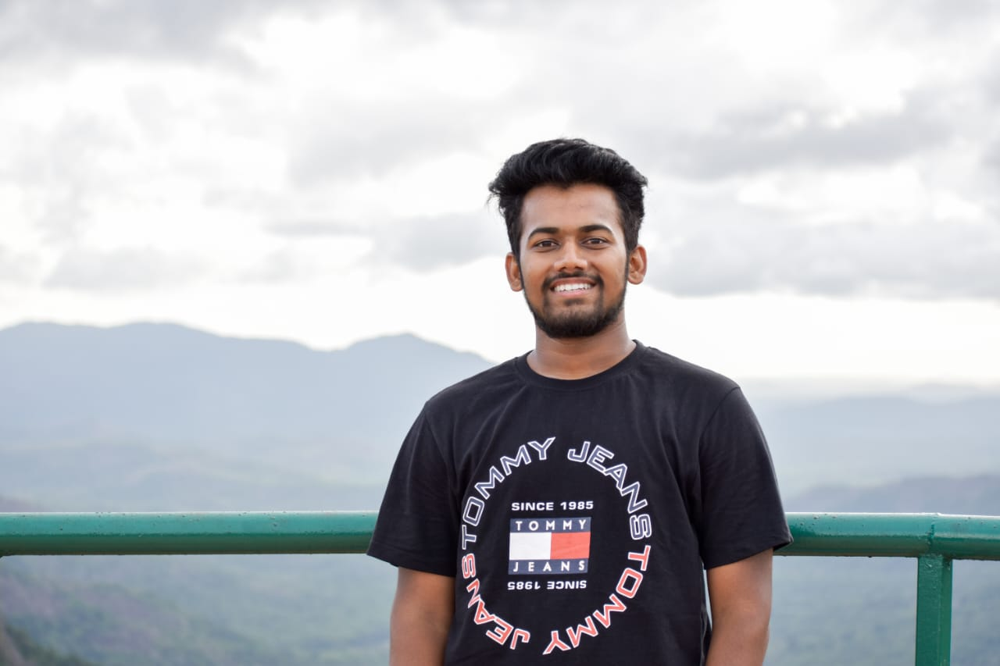

Bharath M S

Summary
I am a hardworking and dedicated individual with Degree in Computer Science Engineering.
Education
- Bachelor of Engineering, Computer Science -Nitte Meenakshi Institute of Technology (VTU) (2019-2023)
Work Experience
Student Intern @ Exposys Data Labs
July 2022 - September 2022
- Worked and gained knowledge on the given hands on
projects based on HTML, CSS , Javascript.
- Successfully completed assigned tasks by building and
implementing front-end components , showcasing expertise
in web development.
- Gained valuable experience during the internship, refining
my skills and enhancing my ability to work effectively in a
professional environment.
IT and Web Development Intern @ Basket Hunt
Agust 2023 - Present
- Worked and gained knowledge on the given hands on
projects based on HTML, CSS , Javascript.
Skills
- C/C++:⭐⭐⭐⭐⭐
- Java:⭐⭐⭐⭐⭐
- OOP:⭐⭐⭐⭐⭐
- Data Structures:⭐⭐⭐⭐⭐
- JavaScript:⭐⭐⭐⭐⭐
- HTML/CSS:⭐⭐⭐⭐⭐
- MySql:⭐⭐⭐⭐⭐
Awards and Certifications
Chiguru - Cultural Team of NMIT
- Member, where we concentrate on development of culture and manage many events in college.
Asteria - Astronomy club of NMIT
-
Core member ,where we offer opportunities to students in
understanding celestial events with the help of advance equipment
Others